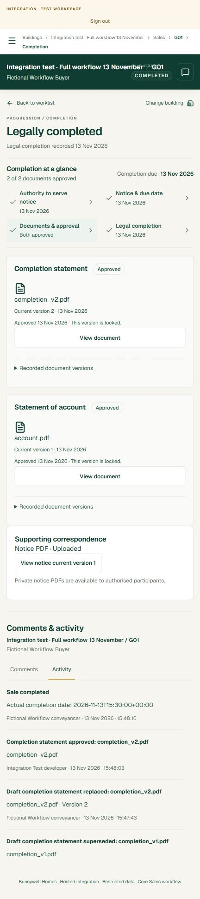
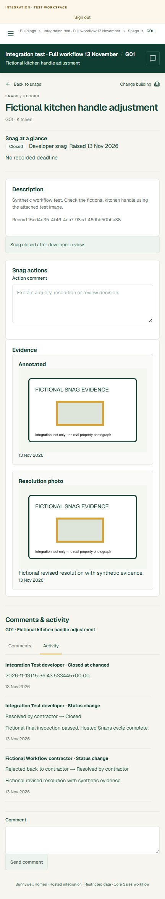

Sales, Snags and Setup are connected for integration testing
Verified 13 November 2026 through ordinary authorised hosted browser sessions. The new fictional G01 sale completed Reservation → Exchange → Completion. Its Snag completed the query, resolution, rejection and closure cycle. Imported reference records were preserved.
Open the same review workspace
Deployed application commit 13f9e842e17c0c22d9ef25c33a1462c28f6fcdb2
Deployment dpl_9jRMUuACD3wpqnc7sHoiTEUzFxNP
Branch codex/wider-workspace-integration
Supabase mmwzhzziqvjbsphrkbqr
Backend migrations applied: 20261113123605_workspace_extended_sales, 20261113140117_workspace_operations, and 20261113154033_workspace_defaults_fields. The final migration persists validated VAT and solicitor-fee defaults; it rewrote no existing data. The deployment alias was checked against the deployment ID after hosted tests.
What you can test
| Area | Writable in the designated test scope | Limits |
|---|
| Sales | Commercial terms, reservation details and PDF, submission/review, captured exchange authority, conveyancer exchange, deposit receipts and corrections, notice/arrangements, Completion uploads/query/revisions/approval/legal completion, sale comments and activity. | Authorised role and exact record checks apply. Extended operations require a designated fictional journey. Historical imported records remain protected. |
| Agent Fees | Invoice PDF upload/view/query/revision/approval; record and void bookkeeping payments. | No bank/payment provider action. Conveyancers cannot view Agent Fees. The test invoice has £1,100 recorded and £0 outstanding. |
| Snags | Creation with private evidence, allocation/priority/deadline, comments, information query/reply, contractor resolution, developer rejection/closure. | New fictional building only. Imported snag histories remain read-only. Role/building checks also apply to private evidence. |
| Setup / Buildings | Fictional building details, ordered floors, units, areas, team and Sales defaults; fictional organisations, trades, unit types and test-account management. | Only the private fictional-record registry is mutable. Test accounts use @example.invalid and have no invitations. Imported configuration and historical accounts cannot be edited/activated through these controls. |
| Read-only / unavailable | Imported Sales, Snags and configuration remain reviewable according to permissions. | Handover finalisation, rentals, external email/invitations and real payment execution remain unavailable. These are deliberate boundaries, not outstanding core Sales wiring. |
Your walkthrough
- Sign in at the same review address. Choose Integration test · Full workflow 13 November. G01 is the completed acceptance example; its current and previous documents, receipts, invoice, comments and activity can be inspected.
- For a fresh journey, use Buildings → Structure in that fictional building to create a new unit, for example G02. Use a configured floor. Keep G01 as evidence.
- Open the new unit's Sales workspace and choose Commercial Terms from navigation. Enter a test price and save the terms before reserving. Defaults are agent fee 2% split 1%/1%, reservation fee £100, exchange 10%, further deposit 5% after one month. Only fictional details and test PDFs should be used.
- As sales agent, enter fictional buyer details, choose a reservation date, confirm the reservation terms, upload a PDF and submit. As developer, view and approve or query. In Exchange, review and capture the test authority. As conveyancer, confirm actual exchange.
- In Deposits, record fictional receipts. In Completion, the developer captures notice authority; the conveyancer uploads the notice and both Completion documents. The developer can query one, the conveyancer uploads its revision, and the developer approves the current versions. The conveyancer then records legal completion. Check Activity and the refreshed worklist.
- In Agent Fees, the agent uploads a test invoice; the developer views, queries/approves and records a fictional payment. A revised invoice currently requires re-entering its reference and total.
- In Snags, create a new fictional snag with a test image and assign the test contractor. The contractor can ask for information and resolve it; the developer replies, rejects or closes. The existing closed G01 snag demonstrates the full cycle.
- In Setup, create/edit only clearly labelled fictional records. Existing imported records stay read-only. Test-account creation is available without sending invites; use fictional email addresses and access only to fictional buildings.
Three ordinary sign-in accounts were provisioned for the fictional building: sales agent, conveyancer and contractor. Their credentials are kept locally in the private test-access file; credentials are not included in committed evidence. Use your existing developer review sign-in for review/Setup.
Test PDFs and the synthetic snag image are in C:\GitHub\Bunnywell_Portal\tmp\hosted-operations. The PDFs explicitly say they are fictional integration evidence.
Fresh hosted evidence
- Sales: agent submission → developer approval → captured authority → conveyancer exchange → exchange/further receipts → notice → Completion v1 query → v2 → approvals → legal completion. Current and previous Completion PDFs rendered. The completed state persisted after refresh and the worklist showed Completed 1.
- Fees: agent upload → developer query → revised PDF → approval → bookkeeping payment. Current PDF rendered and the balance reached zero.
- Snags: create/photo → query → reply → resolve → reject → resolve with further private evidence → close. Genuine event history and closed register state verified.
- Setup: building, floors, unit, room, defaults, three organisations and building-team assignments saved through the browser. Account provisioning used the actual server adapter as preparation, then all three accounts used ordinary hosted browser sign-in. Account provisioning is not counted as a browser acceptance test.
- Reference data: Forum House 63 Buildings / 62 Sales, Priors Gate 64 / 64, Trinity Point 86 / 68. Completed Forum LG10 history, all seven Sales sections, available Priors LG02 and imported snag photographs/activity reviewed without edits.
- Permissions/navigation: exact redacted sale denied; wrong-building Sale/Snag links denied; contractor navigation restricted; conveyancer Agent Fees hidden and direct route denied. Dashboard and filtered-worklist returns, refresh and building switching verified.
| Representative visible-page timing | Observed |
|---|
| Developer sign-in to chooser | 1.40 s |
| Private snag detail/evidence refresh | 2.81 s |
| Completed G01 refresh | 2.11 s |
| Populated Forum dashboard refresh | 1.68 s |
| Switch Forum sale to Priors worklist | 0.95 s |
These are browser action-to-visible-content samples, not server timings or a load-test benchmark. No material regression was observed in these samples. Full test records: hosted-browser-verification.json.
Separate local evidence
25 workspace boundary tests passed. The extended Sales adapter rehearsal passed 16 groups against isolated local Auth/Postgres/Storage. The operations rehearsal passed 10 groups, including replay/conflict checks, stale updates, exact permissions, private evidence, account deactivation and injected-failure transaction rollback. The final defaults migration is included in the rehearsal, with explicit VAT 20 and solicitor fee 882 persistence assertions. Local production build and the final hosted build succeeded. These are separate from the browser evidence above.
Operations rehearsal · Extended Sales rehearsal · Boundary tests
Test records changed and preservation
All destination writes for this acceptance run belong to the new fictional building 8dccf2b3-862a-4564-a45f-d825d524b6a5. Unit G01 d0c239cb-2bf8-4fe4-8ec4-50f74fffd4ee; sale dae16114-7ae2-46e8-8244-8ba02920a539; closed snag 15cd4e35-4f46-4ea7-93cd-46dbb50bba38.
Created: one building, two floors, one unit, one room, three organisations, three test profiles/access assignments, three team assignments, defaults/schedule, one sale with terms/schedule, five documents/seven versions, two captured legal messages, deposit source/receipts, one invoice/payment, one sale comment, one snag/two images and their genuine workflow events. Exact destination IDs by table and command/receipt journal record the details.
All five hashes for the pre-existing buildings, units, sales, documents and snags match the pre-deployment baseline when excluding the new fictional building. LG01 and 102 were not changed by this run. Legacy staging, production, rental data and import evidence were untouched. Both new authority records are captured_test with sent_at=null.
Remaining scope and UI review notes
No sign-in or backend blocker remains for the tested Sales/Snags/fictional Setup cycles. Exhaustive permutations are not claimed as hosted-tested: uncommon corrections, cancellations, every Setup entity edit and account provisioning/deactivation were covered locally rather than repeated in the hosted browser. The deliberate restrictions in the table remain.
Useful UI review items observed: narrow-screen sale identity text overlaps; opening an available unit lands on Completion, so choose Reservation/Commercial Terms in navigation; invoice revisions require reference/total re-entry; legacy payment-schedule status rows can still say pending while the authoritative receipt panel shows received. None prevented the completed journey. These observations do not justify changing historical records.
Hosted Sales proof

Hosted Snags proof

Application deployment manifest: exact commit, deployment, backend migrations and source file hashes.